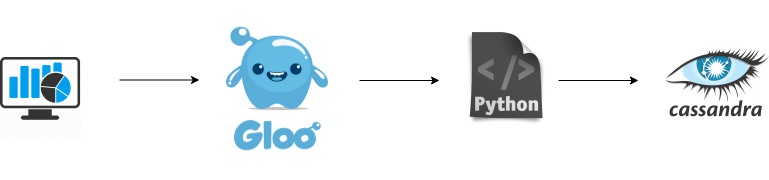

Gloo Synchronous and Asynchronous Demo
This demo shows Gloo transparently channeling ingress trafic to a NATS Streaming server. In this demo, we will show you how you can combine Gloo and NATS Streaming to get the best of both worlds, providing performance transparently to your front end application. Gloo integrates directly with NATS Streaming, translating the HTTP protol to the NATS Streaming protocol.
In this demo, we have a few components:
- This website! - Simulates an app that shows analytics
- Cassandra - the data store for our analytics
- Analytics - sub system that that saves analytics requests. More on that next.
The analytics - two approaches:
Approach 1: A microservice that acceptes the analytics request and sends it to Cassandra.
Approach 2: The request get to NATS Streaming. A microservice subscribes to messgages from NATS Streaming, and writes them to Cassandra.
Gloo makes using the two approaches the same for the front end code, and enables you to smoothtly transition form one approach to another.
